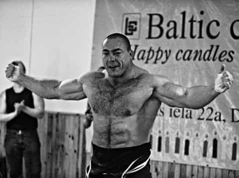

WC is just trying to get a nut like squirrels in this mad world. Land of milk and honey with the swirls, where reckless nekkid girls get necklaces of pearls. Follow me on twitter @WesternxCancer


Wherever there are dudes discussing lifting there is inevitably the mention of the somatotypes: ectomorph, mesomorph, and endomorph. Guys will subscribe to the belief that these body types exist and that they have supreme bearing on their life. Well, they do have a bearing on their lives in that they are needless limiting beliefs. As soon as you say “I’m a hardgainer” or “I’ve reached my potential as a mesomorph” you’ve already quit. You’ve already acknowledged that any failures to lose or gain mass can not be attributed to what you’re doing, but attributed to your “body type”.
Somatotypes were first suggested by psychologist William Sheldon in the 40s. He published his “findings” in 1954. He concluded on the three body types by looking at thousands of pictures of people and classifying them based on how their appearance made him feel. There is no scientific basis to this, just the feelings and observations of a psychologist. The scientific knowledge at the time was that of a current high schooler. Scientists barely knew anything about genetics and biochemistry, so how is it that everyone these days claims scientific reasoning behind the somatotypes. To me they have about as much credibility as phrenology and as much usefulness as measuring BMI.
 What was that about phrenology?
What was that about phrenology?
Ectomorphs are frail and skinny because they stay inside all day and don’t eat enough. Just because they’re shy, introverted and skinny doesn’t mean some mythical body type is the cause of that. Mesomorphs are described to be the athletic and well-built (i.e., a jock). They play sports and eat a lot of food growing up and thus have a respectable body. Endomorphs are described as jolly, extroverted food lovers. Duh, an endomorphic body type is a fatso with or without some muscle underneath, nothing more.
Human beings are not so varied that there exists three distinct groups where morphology is enough to tell us everything we’d ever want to know about one’s metabolism or ideal training methods. Yes everyone is slightly different from one another. What works for one guy might not work as well for the next guy.
There was a guy on the forum who asked why he wasn’t gaining weight and when asked about his training program he said he did HIIT and ate paleo. Of course you’re going to be skinny if you do that, thats what people do to lose fat. If you find you’re gaining weight too fast drop a few hundred calories until you get it just right. There are much more important things to be worrying about, like willpower and preventing injuries.
Describing yourself by one of the three somatotypes is just a limiting belief and a rationalization for failure. The top skills someone training needs, regardless of goals, is accountability and consistency. If you don’t have a general idea of how much you’re eating or how much you’re progressing you’re just going to be stuck treadmilling in the same spot, going nowhere.
 And some of us share Neanderthal DNA. Read Next: 10 Reasons You Can’t Build Muscle